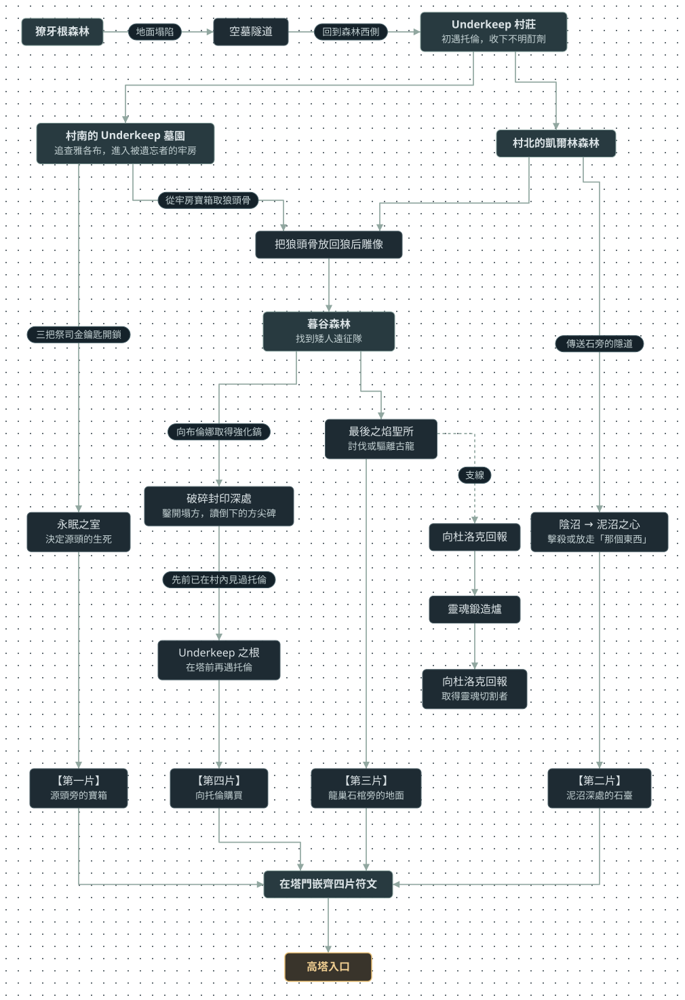
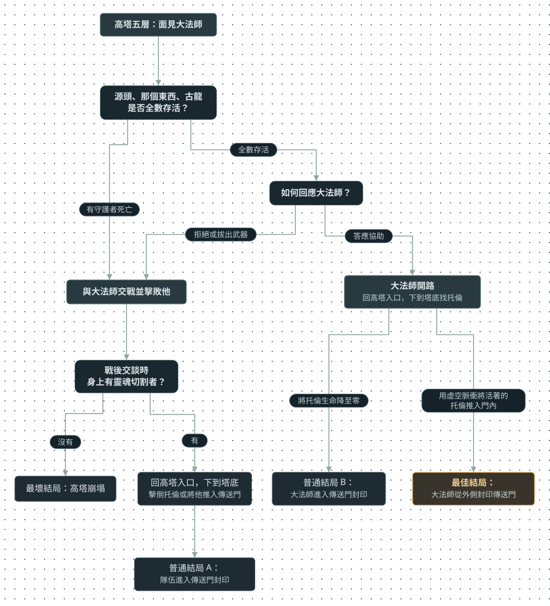
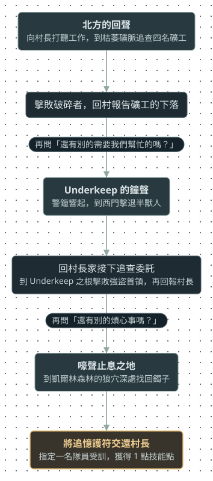
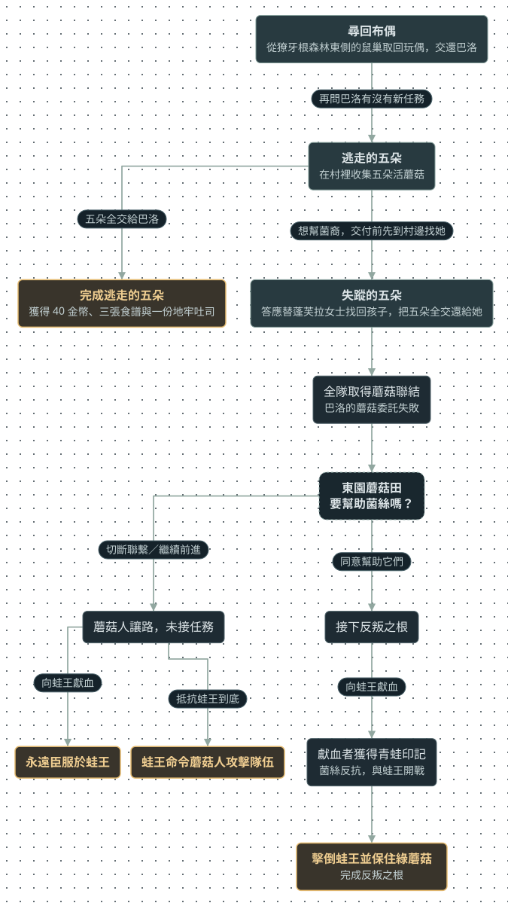
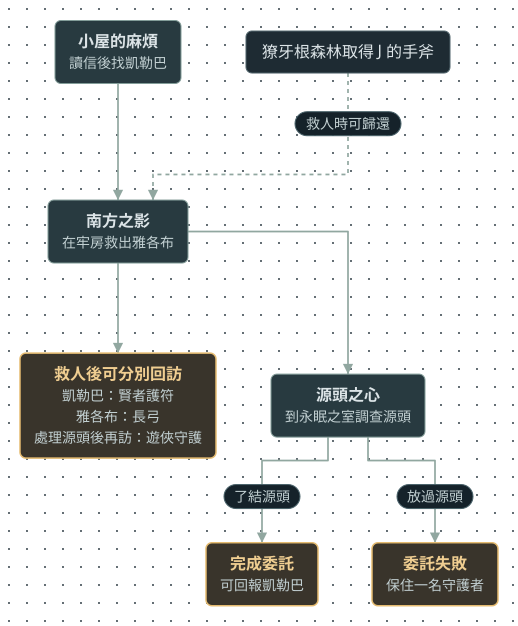
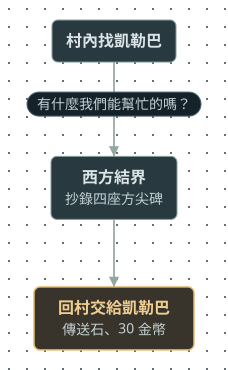
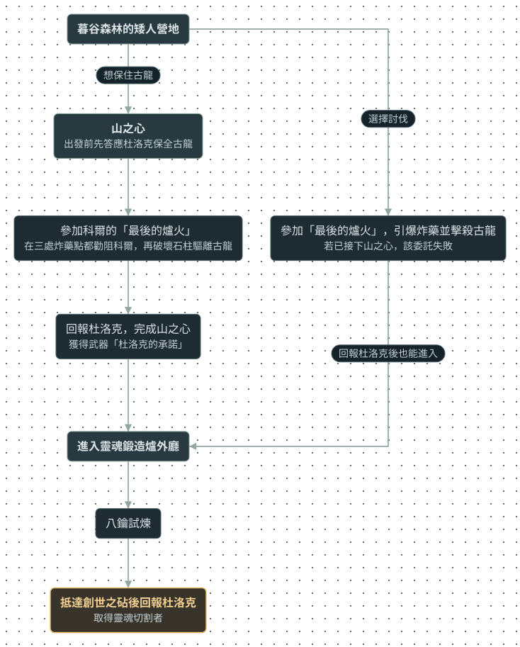

在這款採用戰術回合制戰鬥的地城探索角色扮演遊戲中，踏入危機四伏的奇幻世界。組成冒險隊伍、升級裝備，探索這個完全手工打造的世界。
地圖與遊戲圖鑑需要啟用 JavaScript。
本頁包含主線解謎、劇情分歧與最終結局。

從高塔入口登上五層面見大法師，依三名守護者的生死與隊伍的選擇走向四種結局。

要觀看四種結局不需要重玩，可靠對話選項與戰鬥交談前將靈魂切割者扔地上的方式切換分支。
要將托倫推入傳送門，由力量至少 8 的隊員裝備靈魂切割者，等托倫站到門前，再用「虛空脈衝」把他推上感應格 (-1, -12)。





角色每次升級獲得 1 點技能點。